# + - * /
1+1
## [1] 2
1-1
## [1] 0
3*2
## [1] 6
10 / 2
## [1] 5
abs(-10) # 绝对值
## [1] 10
sqrt(25) # 平方根
## [1] 5
log(100)
## [1] 4.60517
log10(100)
## [1] 2
log2(100)
## [1] 6.643856
exp(10) # 指数函数
## [1] 22026.47
ceiling(3.257) # 往上取整数
## [1] 4
floor(3.257) # 往下取整数
## [1] 3
round(3.275, digits = 2) # 四舍五入
## [1] 3.282 R语言初体验
安装好R和RStudio之后，鼠标左键双击RStudio的图标，即可打开RStudio了。
我们可以先试一下R的计算功能，比如做一些加减乘数等数学运算。
在编写代码前，请一定要记住必须把输入法改为英文模式，尤其是各种标点符号！
2.1 控制台和脚本窗口
在Console（中文：控制台）窗口中，大于号>的后面，输入1+1，然后按回车键，就会给出计算结果。同理输入其他运算式，按回车键，都会立马得到结果。
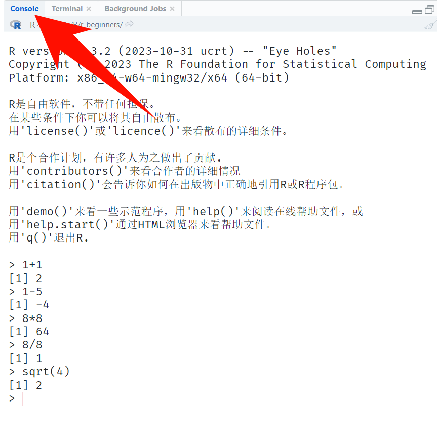
注意
这个大于号>叫命令提示符，提示你这里是输入代码的地方。
R语言中的一些常见数学运算：
除了数学运算，还可以输入各种函数，比如输入print("Hello, world")，你可以尝试下。
但是通常我们是不会直接在控制台窗口写代码的，而是在脚本窗口写代码，控制台用来查看代码输出结果。R脚本文件的扩展名为.R。
以下是两种方式新建一个R脚本：
方法一：依次点击左上角的File-New file-R Script，即可打开一个新的R脚本：
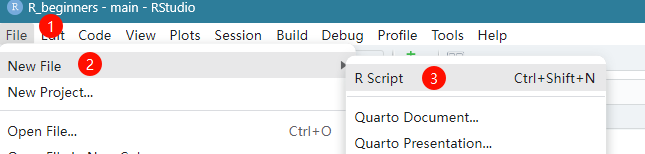
方法二：点击New File小图标，再点击R script，也可以新建一个R脚本，两种方法完全一样。
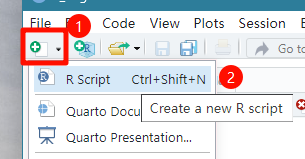
新建脚本文件后，我们就可以在脚本中写自己的代码了，这里写好的代码可以保存的，方便以后使用。如果你没保存，会有*提示，下面的保存按钮可以保存当前脚本（快捷键“control+s”），保存时可以修改这个脚本的名字：
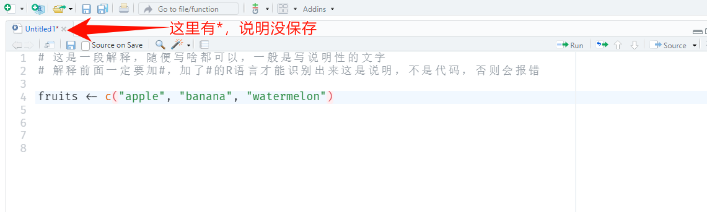
在这个脚本文件里可以写任何你想写的代码，比如上面我写了一个名字为fruits的向量，其中包括3个元素：apple、banana、watermelon。
R语言中使用<-作为复制符号，而不是=（但是使用=也可以，没有任何问题），以下两种写法都可以：
# 两种写法都可以
a <- 3
a = 3
b <- 4
b = 4
a+b
## [1] 7
注意
上图脚本中前两行我写了很多中文，而且在每一行的前面都加了#，#表示这一行不是代码，不需要运行，你可以在#后面写任何你想写的东西，比如一些解释说明的话等。
写好代码之后如果你要运行这个代码的话只需要把光标位置放在你要运行的代码的这一行，然后点击Run即可运行这行代码（也可以使用快捷键“control+enter”），代码运行结果会出现在控制台窗口：
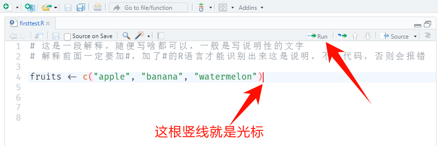
点击Run之后，代码运行结果会出现在控制台窗口：
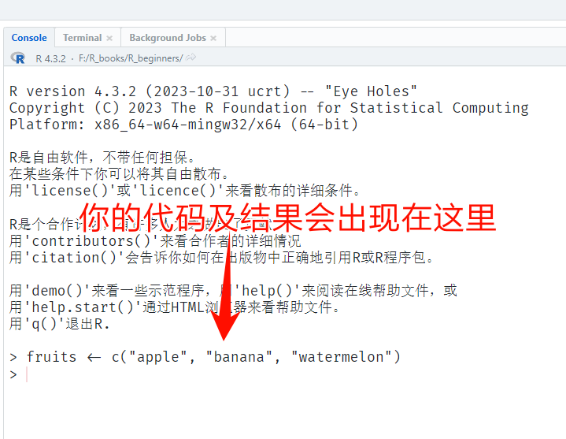
注意
光标位置在代码的开头、中间、结尾都没关系，RStudio都能识别出来，你也可以直接使用鼠标全部选中你要运行的代码，再点击Run，也可以达到一样的效果。
如果命令提示符（也就是控制台窗口中的>）变成了一个加号（+），这表示我们输入的代码不完整，它正在等你输入完整的代码，这种情况通常是因为我们输入的代码太长了，超过了1行的限制，或者代码中的标点符号（比如：括号，逗号等）不成对。此时按“Esc”即可退回到正常状态下。
RStudio的一大优点就是有代码自动补全和语法高亮功能。
当你输入代码时，编辑器会提供语法高亮和代码补全提示。你只要输入前3个字母，再按Tab键，即可显示所有可能的函数，按上下方向键可以选择你需要的函数，选好之后按enter键即可选中。鼠标停留在函数名字上即可显示该函数的用法：
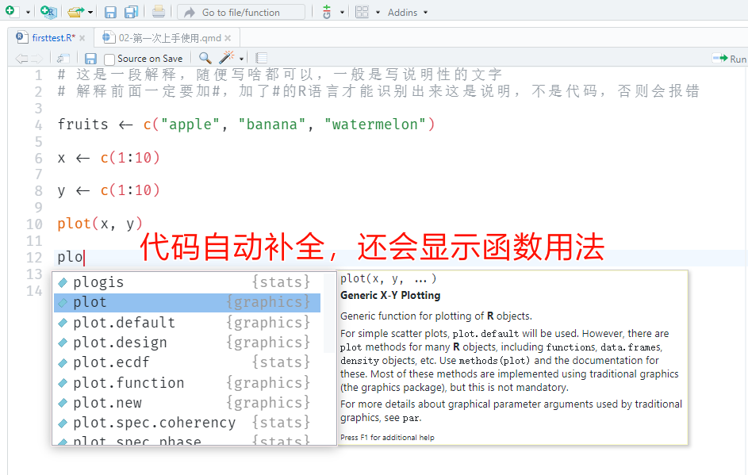
另一个常用的快捷键是赋值符号：<-，它是由小于号<和减号-组成的，在RStudio中可以通过快捷键Alt+-快速输入。
2.2 环境窗口和绘图窗口
当我们运行代码后，我们建立的对象（比如上面的fruits、x、y）会出现在Enviroment窗口中：
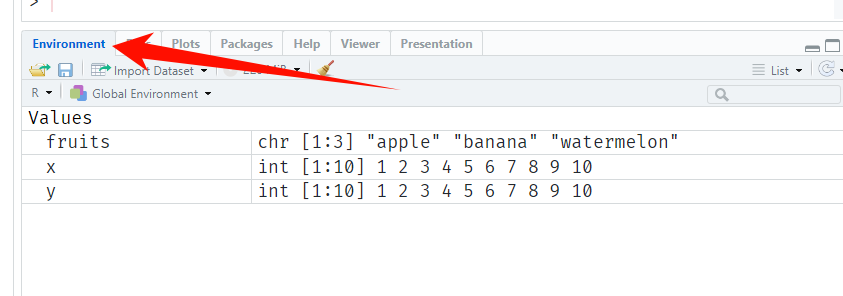
当我们执行画图代码后，图形会出现在Plots窗口：
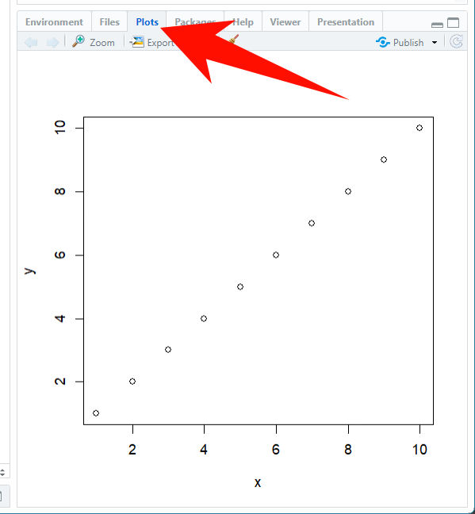
清楚当前环境中的某个对象，可以用：
rm(xxx) # xxx是对象名字，rm是remove的缩写如果要同时清楚所有对象，可以直接点击Enviroment窗口中的小扫帚图标，也可以直接用：
rm(list = ls()) # ls()是list的缩写，意思是列出当前所有对象2.3 推荐的RStudio设置
点击Tools-Global Options，按照以下图片所示进行设置。
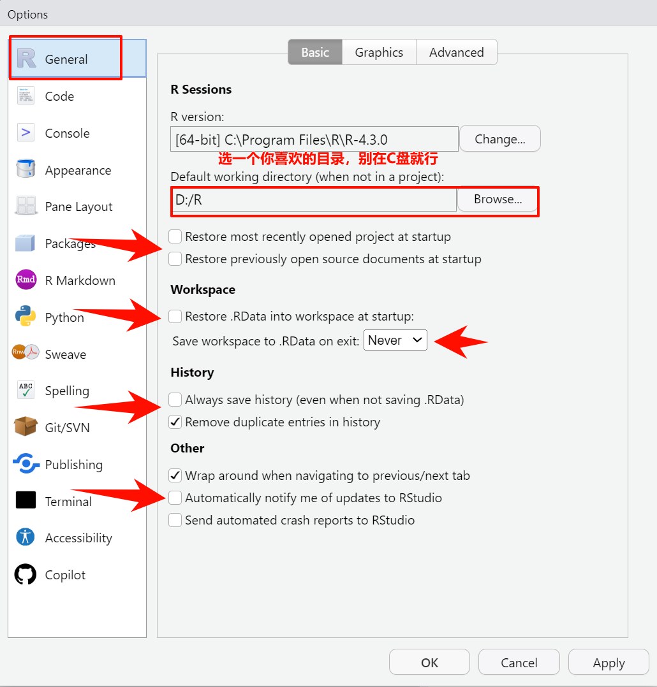
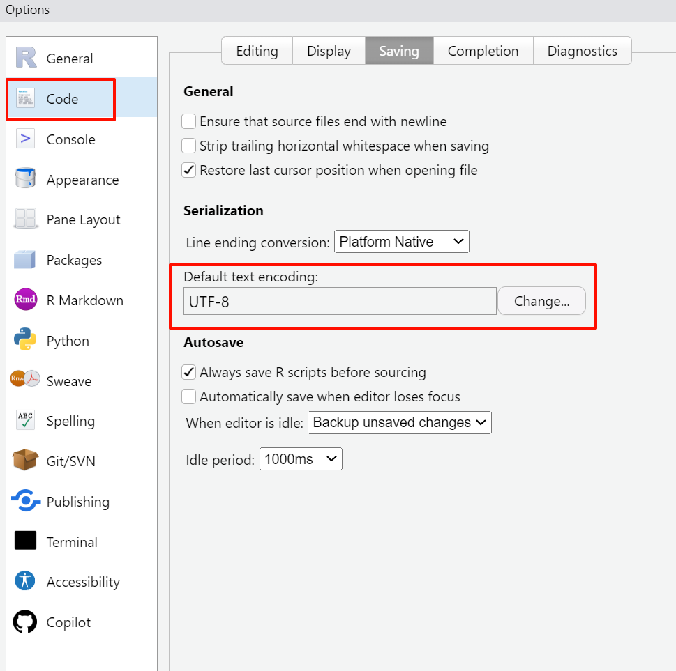